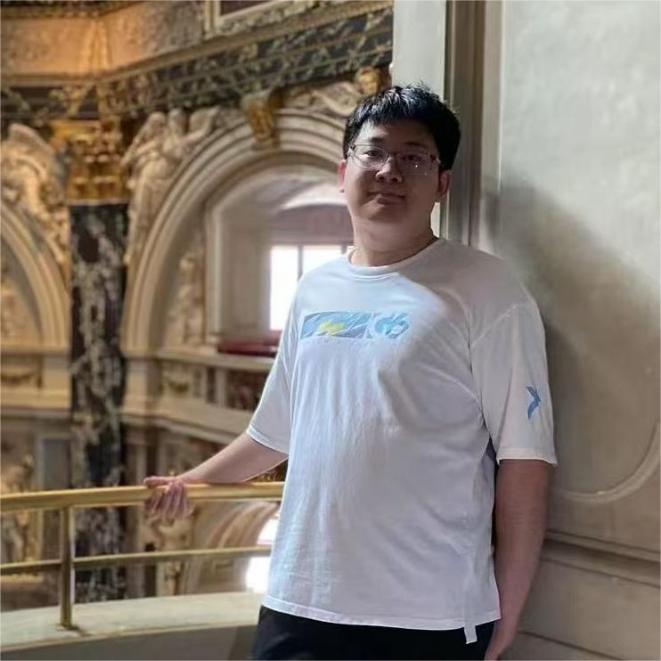

Mphil Student
The Hong Kong University of Science and Technology
Email: ygaodi@cse.ust.hk
Hello! I am Yisen Gao, an Mphil student in HKUST-KnowComp supervised by Prof. Yangqiu Song. I get the bachelor's degree in Artificial Intelligence from Beihang University in June, 2025. I have been an intern in Magic Group for two years supervised by Prof. Jianxin Li, Prof. Qingyun Sun, and Prof. Xingcheng Fu. I got the Beijing Natural Science Foundation in 2024. I also served as a reviewer/program committee member for the top conferences including IJCAI, ICML, ACL, AAAI, ICLR. My google scholar is here. For any intention of cooperation, please feel free to contact me.
Thanks for the support by Beijing Natural Science Foundation.